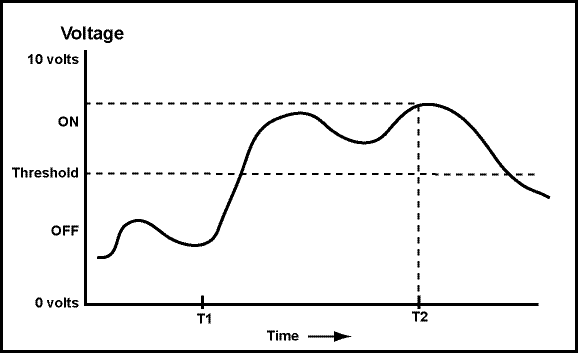

Perhaps.
The computation is done by moving beads to unambiguous positions. A bead is either placed where it counts as part of a number, or it is placed where it does not count. This "all or nothing" operation means that an abacus is a discrete device.
An analog signal may continuously change in value. Its values can be anything within a range of values, and its exact value at any time is important. The graph below represents an analog signal. The exact value at each instant in time is part of the information it contains. For example, the value at time "T2" must be measured exactly.
Now say that you are observing the voltage of a wire. Let's agree that any voltage below a threshold will be counted as an "off" signal, and that any value above the threshold will be counted as an "on" signal.
At time "T2", is the signal "on" or "off"?